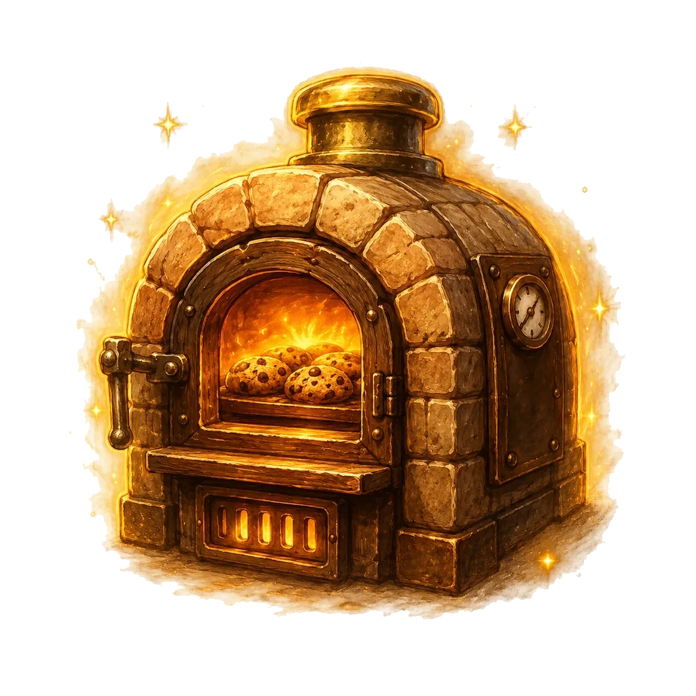
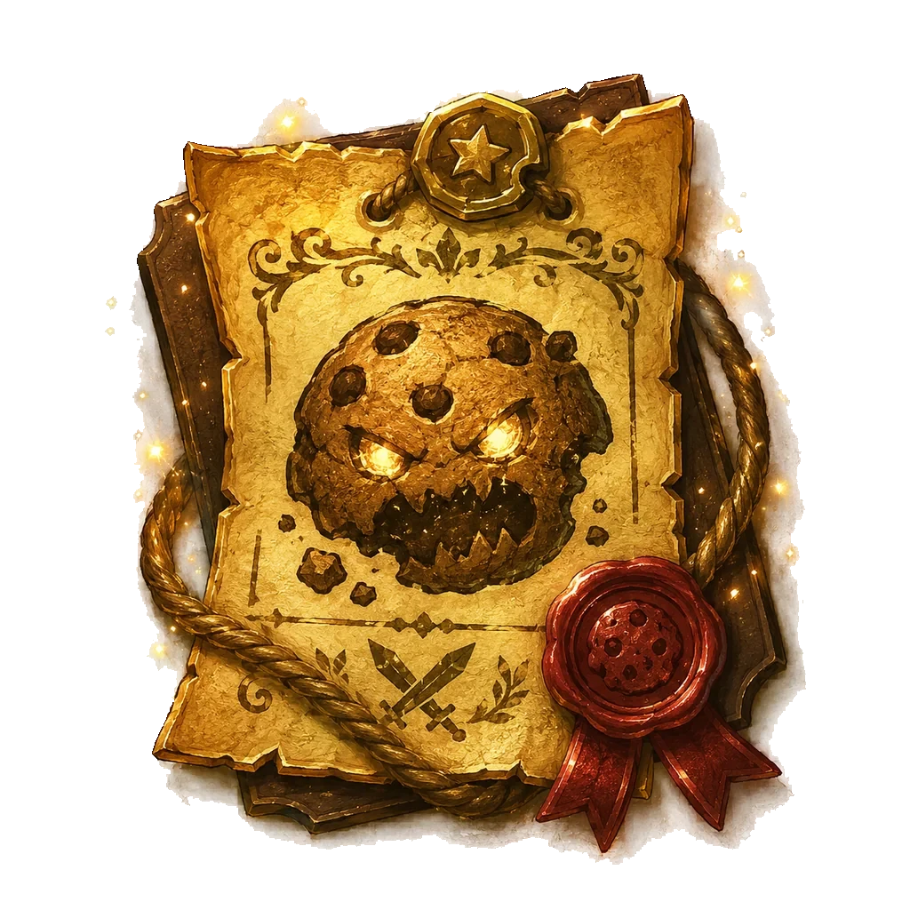
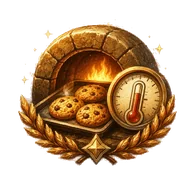
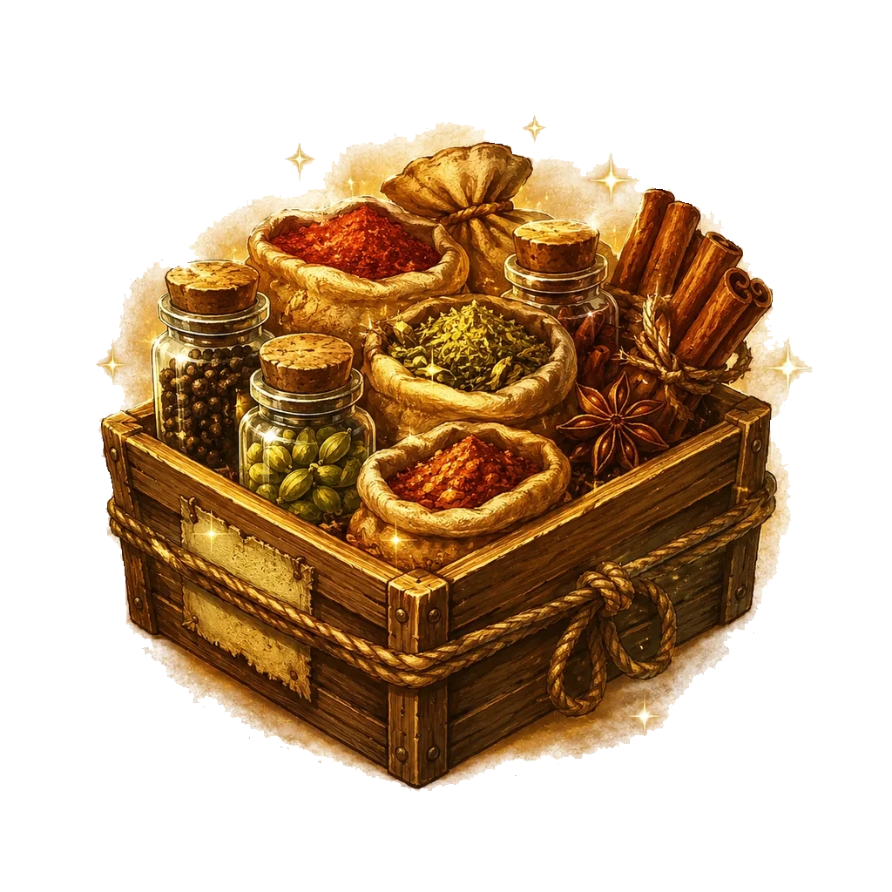
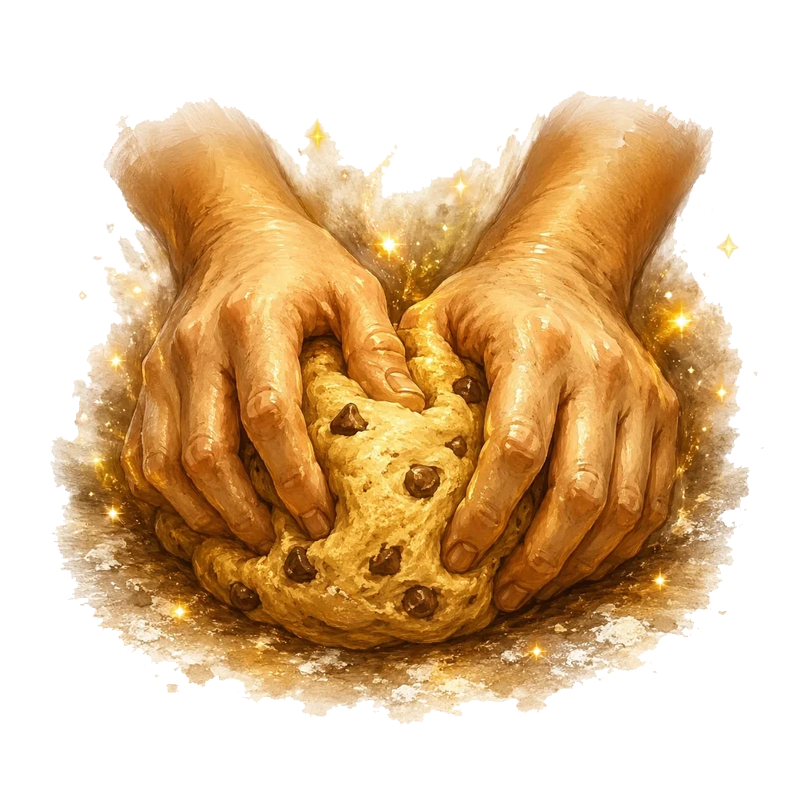
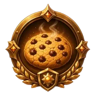
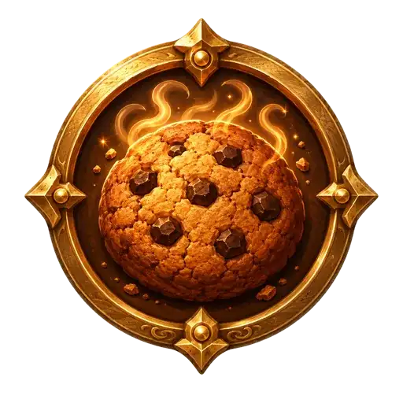
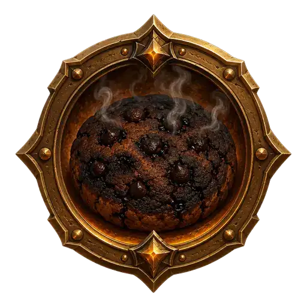

周回方針・注文ボード・焼き加減
転生してから次の周回を始めるまでに決める要素のデータです。周回方針はその周回の性格を、注文ボードは周回中の追加報酬を、焼き加減は生産の寄せ方を決めます。
周回方針（5種）
スキル「分岐炉心」を取ると、転生時に周回方針を選べるようになります。方針は生産の伸び方だけでなく、落ちやすい素材にも影響します。
| 方針 | 効果 | 素材の傾向 |
|---|---|---|
| 標準 | 補正なしの基本形。 | 素材: 万能粉(任意素材の代替・必要数2倍換算)が討伐で手に入る唯一の方針 |
| 会心型 | タップと会心を伸ばし、手動クリック寄りにする。 | 素材: 討伐数が伸びやすく、通常撃破の基本素材集めと相性が良い |
| 焼成型 | 毎秒生産とオーブン研究を伸ばす。 | 素材: 余裕率2倍撃破の発酵系素材と相性が良い |
| 狩猟型 | モンスター火力と滞在時間を伸ばす。 | 素材: オーバーキル撃破(残HP5倍ダメージ)のレア素材と相性が良い |
| 金色型 | 金クッキーの回転とブーストを伸ばす。 | 素材: 金ブースト中撃破の黄金粉(唯一の入手経路)と相性が良い |
素材が目的の周回では、方針が実質的に「どの素材を集めるか」の選択になります。とくに黄金粉は金色型（金ブースト中の撃破）でしか手に入らず、万能粉は標準型でしか落ちません。装備の材料が足りないときは、方針から見直してみてください。
注文ボード（7種）
スキル「注文ボード」（55ポイント）で解放される、時間制限つきの依頼です。制限時間内に条件を満たすと報酬が受け取れます。必要数はそのときのあなたの生産ペースを基準に算出されるため、進行度にかかわらず「がんばれば届く」量になります。
| 注文 | 内容 | 報酬 |
|---|---|---|
 追加焼成 | オーブンを増やす（単位：個） | クッキー(300秒間 獲得+50%) |
 討伐依頼 | モンスターを倒す（単位：体） | 素材セット |
| 金粉納品 | 金クッキーを取る（単位：回） | 毎秒生産×2(120秒) |
 安定焼成 | ノルマ達成状態を維持する（単位：秒） | 毎秒生産×2(120秒) |
| 研究依頼 | 研究を買う（単位：件） | 毎秒生産×2(120秒) |
 香料仕入れ | 香料棚を増やす（単位：個） | 素材セット |
 手ごね依頼 | クッキーをタップする（単位：回） | クッキー(300秒間 獲得+50%) |
報酬のうち「毎秒生産×2（120秒）」は、達成した瞬間から2分間、生産が倍になります。この2分でまとめ買いを進めると、そのまま周回全体の傾きが上がります。「素材セット」は工房を回している周回で価値が高く、装備の材料不足を埋めてくれます。
焼き加減（4種）
焼き加減は、生産の寄せ方を選ぶ要素です。同じ生産量でも、どこに寄せるかで周回の性格が変わります。
| 焼き加減 | 寄せる先 |
|---|---|
| 生焼け | 金クッキー寄り |
 ちょうどいい | 毎秒生産寄り |
 香ばしい | 狩猟寄り |
 焦げ気味 | 高生産・高リスク |
「焦げ気味」は生産が最も高くなるかわりにリスクを伴います。ノルマの壁を越えるために一時的に寄せる、という使い方が基本です。